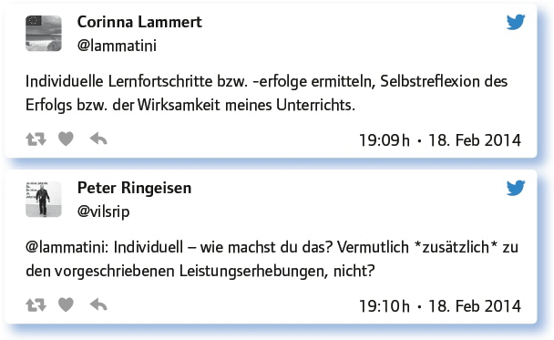
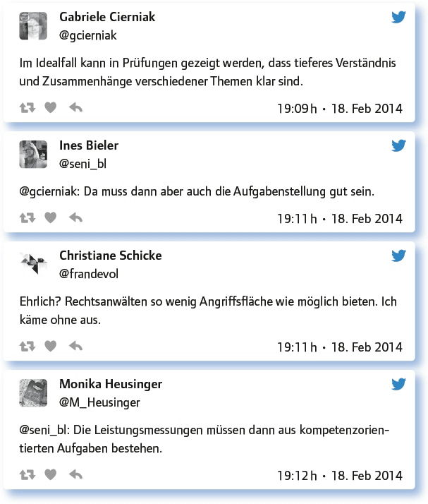
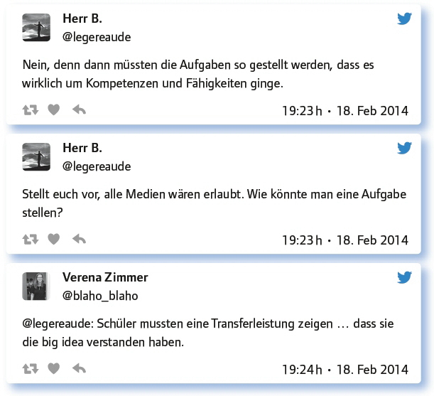
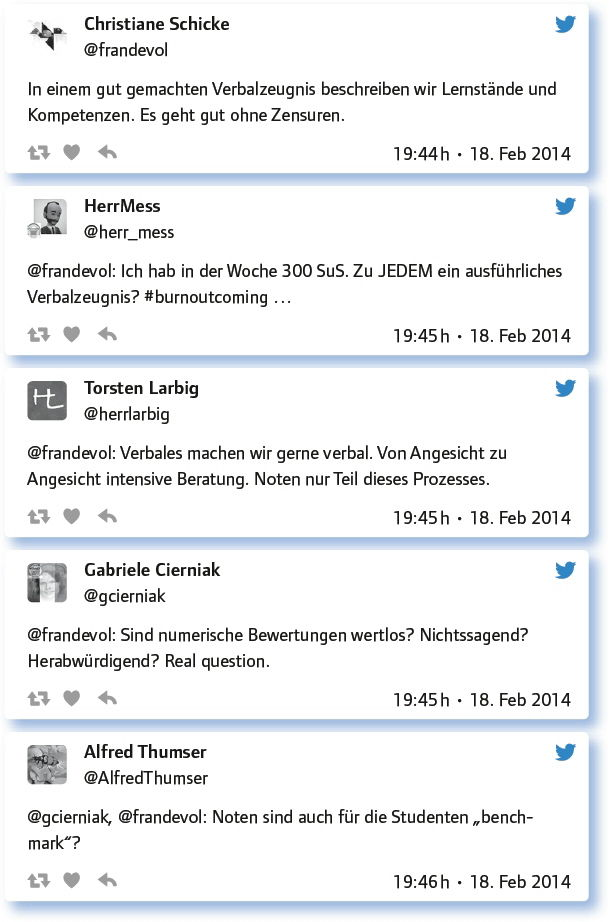

von Torsten Larbig
Kein langes Vorwort, springen wir direkt in das Thema Prüfungen hinein und stellen wir die Sinnfrage:
Welche Ziele verfolgst du mit Prüfungen?
Na, gar nicht so einfach. Oder? Hier ein paar Anregungen von Lehrkräften, die auf Twitter unterwegs sind:
Meine Behauptung: Im traditionellen System scheinen Prüfungen oft DER Grund zu sein, dass SuS überhaupt lernen …
Ich führe eine Wissenskontrolle nach Vorschrift aus. Alternativen wie z. B. „Facharbeiten“ sind mir aber lieber, da sie meist kreativer sind.
Hier eine kurze Diskussion darüber, ob und wie individuelle Lernfortschritte ermittelt werden können:

Und hier noch eine weitere Diskussion darüber, ob und wie ein tieferes Verständnis von Zusammenhängen abgefragt werden kann:

Nach so viel Hin und Her zwischen Evaluation und Zwang und angesichts der Tatsache, dass in vielen Bundesländern ein schriftlicher Leistungsnachweis im Range einer Klassenarbeit durch eine gleichwertige Alternative ersetzt werden kann – einfach mal im Schulgesetz des eigenen Landes nachschauen, wenn es da Unklarheiten gibt –, direkt die damit verbundene Frage, deren Beantwortung so spannend ausfällt, dass dieser Frage hier mehr Raum als üblich gegeben werden soll:
Facharbeit, Portfolio, Projektarbeit: Erfahrungen mit schon verbreiteten alternativen Prüfungsformen?
Ich habe Erfahrung mit Wiki und Online-Lerntagebuch mit Kommentarfunktion
Ich habe gute Erfahrungen mit Portfolioarbeit: http://t.co/VbUx4JMtM0. Gerade heute: Tolle Ausstellung/Präsentationen der Facharbeiten.
Ich habe viele Facharbeiten betreut, zuletzt eine Schülerin, die selbst Unterricht gestalten sollte. War bisher immer lehrreich.
Bloggen, Wikitexte, Filme, Interviews. Auch „statt Klausur“ mit Zeitvorgabe.
Portfolio-Arbeit Englisch, Projekt-Arbeit in Geschichte. Bisher nur als eine Klausurersatzleistung, laut Fachanforderungen.
Formative assessments & portfolios take teachers out of comfort zone? More training required?
Portfolio war Thema des 1. Examens. „Richtige“ Portfolioarbeit ist sehr schwer. Es wäre mir zu wertvoll, um es zu bewerten.
SuS halten keinen Vortrag sondern erstellen eigene Internetseite mit https://t.co/CI-2u9TQapa, Vortrag mit prezi – mündlicher Vortrag.
Ein Lerntagebuch ist sicherlich gut für Menschen, die lange nicht mehr im formalen Bildungssystem waren.
Notengebung ist immer problematisch http://t.co/WHXWEtpuhH, auch bei alternativen Prüfungsformen.
Lehrer haben viel Spielraum übers Jahr, ansonsten sind Schularbeiten in Österreich Pflicht.
Das Ganze wird spannend mit der Einführung von Kompetenzen & Bildungsstandards, die nicht wirklich in Prüfungen bewertet werden.
Alternative Prüfungsformen sind auf jeden Fall nicht weniger arbeitsintensiv.
Nun aber weg von den Alternativen. In Dänemark hat man bereits 2010 mit dem Laptop im Abitur experimentiert (www.sueddeutsche.de/karriere/online-im-unterricht-abi-mit-google-1.140530), in Deutschland ist man da noch eher distanziert gegenüber der Frage, ob man digitale Medien in „normalen“ Prüfungen zulassen soll oder nicht:

Und es gab viele bei diesem #EDchatDE, die genau darauf hinwiesen, dass die Aufgabenstellung der Knackpunkt ist … Und sonst?
Kreativer „Betrug“ von Schülern gehört wohl zur Regelschule. – Das hat wohl was mit Zensuren zu tun.
Mogeln soll ja auch ohne Technik möglich sein!
Der SEB der ETH ist eine abgesicherte Browser-Applikation zur Durchführung von Online-Prüfungen: http://t.co/QelCYmSIxh.
Für Betrug benötigt man keinen Computer.
Ist Auswendiglernen und Bulimielernen nicht biologisches Copy+Paste? Wo ist denn der Mehrwert im stupiden Formellernen?
Was nun, wenn wir die Frage nicht mehr als Frage nehmen, sondern uns einfach mal vorstellen, was eigentlich wäre, wenn …?
Lass deiner Fantasie freien Lauf: Wie sehen Prüfung im digitalen Zeitalter aus? Was geht schon heute?
Stopp – Erst der eigenen Fantasie Raum geben – und dann lesen, was im #EDchatDE für Ideen entwickelt wurden …
Lerne im Videochat mit Schülern aus UK pro Woche 25 neue Vokabeln. Lege das Vokabelheft vor, damit machen wir dann Vokabeltest.
Guckst du hier: Mini Device – maxi Abitur: http://t.co/W6sXoIy1rm
For example: Students create an eBook (features of a non fiction text page).
Students create an infographic to show their understanding.
Gruppenarbeiten, die dank digitalem Stempel analysierbar sind, digital erstellt – und im Idealfall nicht örtlich begrenzt.
Erstelle eine kommentierte Linkliste zum Thema xy – Bewerte die Links und begründe Bewertung!
Vielleicht gibt es im digtialen Zeitalter keine Prüfung mehr, sondern diagnostische Beobachtungen und erreichte Kompetenzstufen?
Ich stelle viele Fragen, die SuS picken sich die Schreibanregungen heraus und individuelle Texte entstehen.
Vergleiche die Materialien X und Y hinsichtlich ihrer Einsatzmöglichkeit für die Anwendung Z und beurteile die Nachhaltigkeit.
Peer-Feedbacks im Deutschunterricht: Rückmeldungen zu Kollegen-Aufsätzen. http://t.co/15FRvqQSyK
Bin eben dabei, einen Klassenaustausch via Blog mit amerikanischer Klasse zu organisieren. Überprüfe darüber verschiedene Kompetenzen.
Und es gäbe sicher noch viel mehr Ideen … Hier wäre jetzt noch einmal der Punkt, innezuhalten, zu überlegen, welche der genannten Ideen für den eigenen Unterricht in Frage kommen – oder vielleicht regen die genannten Ideen ja auch noch ganz andere Fantasien an … Aber eine Frage bleibt bei Prüfungen immer bestehen, der es sich zu stellen gilt:
Prüfungen mit digitalen Medien und verfügbarem Internet: Das Ende der Noten? Endlich?!
Diese Frage lässt sich mit einem knappen Austausch dreier Teilgeber beim #EDchatDE zusammenfassen:
Nenn das Pferd, wie du willst, es bleibt ein Pferd.
Leistungsbewertung – Note – Badge – Lernstand – Kompetenzlevel! Wer hat noch nicht, wer will noch mal?
Badges als Alternative zu Noten. Weg mit den Noten. http://t.co/zvJYCEC1TW
Und hier noch ein zweiter „Dialog“, der sich zum Thema ergab:

Fazit:
Neue Prüfungsformen sind denkbar. Das Nachdenken über sie ist bereits heute spannend, auch wenn man in ein gewisses Spannungsverhältnis zu Vorgaben des Schulrechts tritt, weil sich daraus vielleicht noch keine Prüfungen ergeben, aber manchmal spannende Ideen für den laufenden Unterricht.
Links zum Thema:
Auf diesen Artikel stößt man bei der Recherche schnell. Leider kommt das Wort „Klassenarbeit“ nur in der Überschrift vor Als Einführung in die Problematik aber ist das geeignet: www.deutschlandfunk.de/ipad-raus-klassenarbeit.680.de.html?dram:article_id=251027
Diese Website verschreibt sich ganz konstruktivistischen Unterrichtsmethoden. Wie man daraus Prüfungsformen machen kann und wie man – was immer man auch darunter verstehen mag – hier neue Medien einsetzen kann? http://methodenpool.uni-koeln.de/
Endlich fündig geworden: In Köln wurde schon mal eine Klassenarbeit in einem Wiki und sozusagen weltöffentlich geschrieben: http://kas.zum.de/wiki/Klassenarbeit
Und hier noch ein Beitrag aus Köln, der Ideen für den Unterricht mit Tablets enthält: https://ipadkas.wordpress.com/2011/12/22/11-monate-ipad-kas-ein-review-mit-perspektive/
Steht zwar nicht dabei, aber dieser Blog aus Frankfurt/Main entstand als Ersatz für eine Klausur. In Hessen ist es möglich, eine Klausur pro Schuljahr durch eine äquivalente Leistung zu ersetzen. Das ist dann auch schon ein Hinweis, wie man alternative Prüfungsformen bereits an welcher Stelle im Unterricht einsetzen kann: https://religk2013.wordpress.com
Der Spiegel berichtete hier über eine Laptopklasse in Dänemark. Klassenarbeiten werden zwar erwähnt, aber es bleibt völlig offen, wie diese ausgestaltet werden: www.spiegel.de/schulspiegel/daenemark-digital-am-orestad-gymnasium-wird-ohne-papier-unterrichtet-a-858526.html
In diesem Beitrag aus Ilmenau wird erläutert, dass es für die Laptops einen Prüfungsmodus gebe, der den Zugriff nur auf Prüfungsunterlagen zulasse. Mehr Infos dazu leider auch hier nicht. Der #EDchatDE hat also einiges zu klären: www.thueringer-allgemeine.de/web/zgt/leben/detail/-/specific/Laptops-sind-fuer-Ilmenauer-Schueler-im-Unterricht-erlaubt-1714221728
Hier geht es im letzten Abschnitt um Klassenarbeiten mit dem Laptop: www.welt.de/print-welt/article514073/Laptop-statt-Schulheft-Unterricht-der-Zukunft.html
Offtopic, aber doch irgendwie zum allgemein passend ein Band der Konrad-Adenauer- Stiftung zur „Erziehung in der Wohlstandsgesellschaft. Aufwachsen mit Konsum und Medien“: www.kas.de/wf/doc/kas_33293-544-1-30.pdf?13021215 1651
Rethinking Testing in the Age of the iPad: #EDchatDE www.edweek.org/dd/articles/2012/02/08/02mobile.h05.html
Effective Assessment in a Digital Age A guide to technology-enhanced assessment and feedback: www.webarchive.org.uk/wayback/archive/20140614115719/ http://www.jisc.ac.uk/media/documents/programmes/elearning/digiassass_eada.pdf
Link zum vollständigen Protokoll: